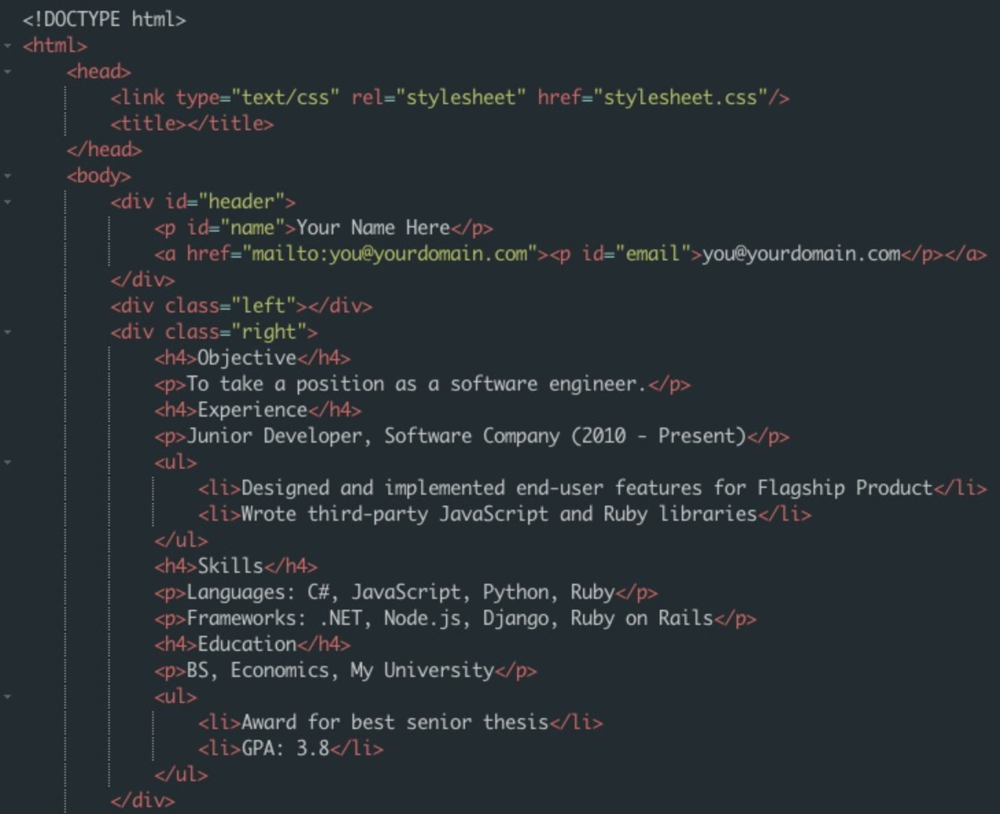

En ny ideell organisasjon i USA, Code.org, agiterer for at flere skal lære seg å programmere.
På sin forside – og på Youtube – har de lagt ut en video på ni og et halvt minutter, med tittelen What Most Schools Don’t Teach. Gjennomgangstemaet er: «Everybody in this country should learn how to program a computer».
IT-kjendiser som Mark Zuckerberg og Bill Gates stiller opp for å forklare at programmering ikke er spesielt vanskelig, og at det er et stort underskudd på programmerere. Kan du programmere, er du praktisk talt garantert jobb. Gjennomgangsfiguren er ei jente som stiller spørsmål: Hvorfor lærer vi ikke dette på skolen? Hvorfor vil unge bli alt annet enn dataeksperter, når det er så stort behov for folk IT-kunnskaper?
Det er ikke bare IT-kjendiser som svarer. Musiker will.i.am (The Black Eyes Peas) undrer seg over hvordan all avhenger av teknologi og ingen kan skrive kode: «Fra åtte års alderen bør barn lære å skrive kode.» NBA-stjerne Chris Bosh maner til å lære seg «framtidens språk».
Det dreier seg ikke bare om jobb og penger. Koding framstilles som en mulighet til å skape, til å lage kunst og til å uttrykke seg selv. Jack Dorsey, mannen bak Twitter og gründer av Square, sammenlikner «stor programmering» med «stor kunst».
Bildet over er hentet fra et Codecademy-kurs. Gjengen på Codecademy tilbyr interaktive kurs i språk som Javascript, HTML, CSS, Python, Ruby osv
Ved å bruke gamification-triks som badges, streaks, og annet motiverer de deg til å fullføre og lære på en gøy måte. Ved å bruke gamification-triks som badges, streaks, og annet motiverer de deg til å fullføre og lære på en gøy måte. Ved å bruke gamification-triks som badges, streaks, og annet motiverer de deg til å fullføre og lære på en gøy måte. Ved å bruke gamification-triks som badges, streaks, og annet motiverer de deg til å fullføre og lære på en gøy måte. Ved å bruke gamification-triks som badges, streaks, og annet motiverer de deg til å fullføre og lære på en gøy måte. Ved å bruke gamification-triks som badges, streaks, og annet motiverer de deg til å fullføre og lære på en gøy måte. Ved å bruke gamification-triks som badges, streaks, og annet motiverer de deg til å fullføre og lære på en gøy måte. Ved å bruke gamification-triks som badges, streaks, og annet motiverer de deg til å fullføre og lære på en gøy måte. Ved å bruke gamification-triks som badges, streaks, og annet motiverer de deg til å fullføre og lære på en gøy måte. Ved å bruke gamification-triks som badges, streaks, og annet motiverer de deg til å fullføre og lære på en gøy måte. Ved å bruke gamification-triks som badges, streaks, og annet motiverer de deg til å fullføre og lære på en gøy måte. Ved å bruke gamification-triks som badges, streaks, og annet motiverer de deg til å fullføre og lære på en gøy måte. Ved å bruke gamification-triks som badges, streaks, og annet motiverer de deg til å fullføre og lære på en gøy måte. Ved å bruke gamification-triks som badges, streaks, og annet motiverer de deg til å fullføre og lære på en gøy måte. Ved å bruke gamification-triks som badges, streaks, og annet motiverer de deg til å fullføre og lære på en gøy måte.